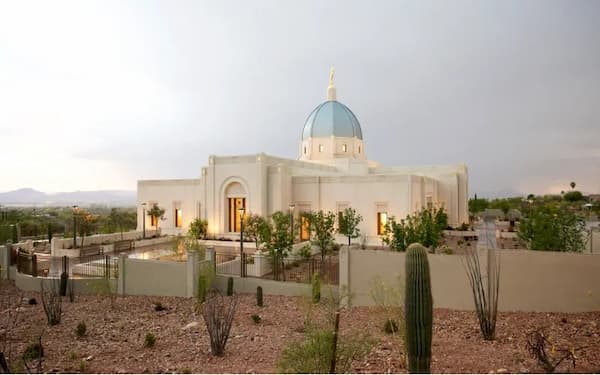
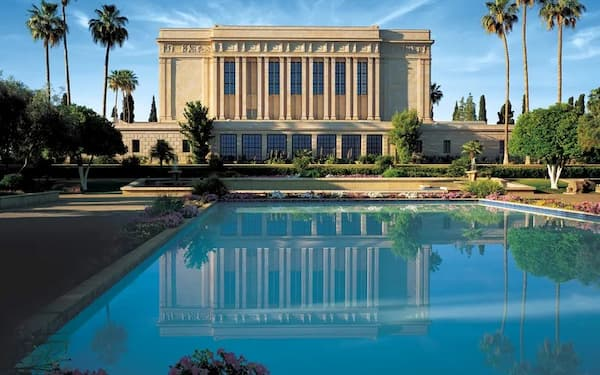
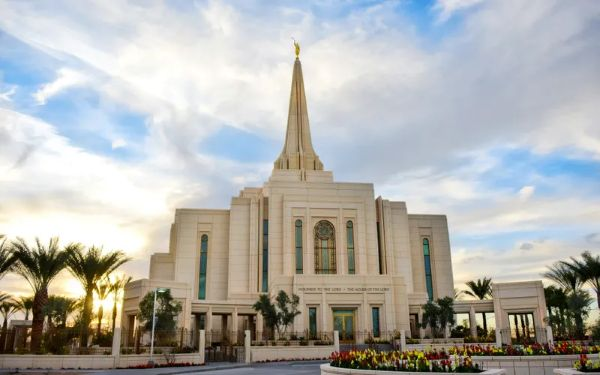
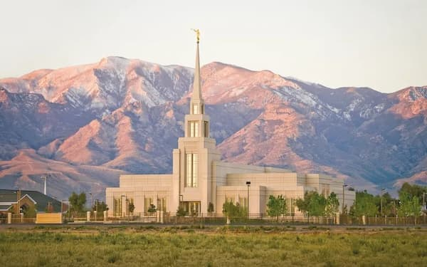
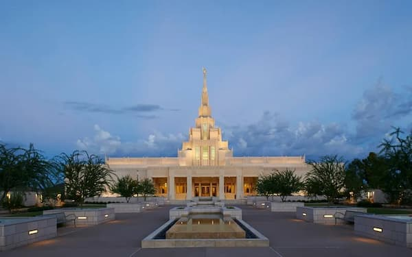
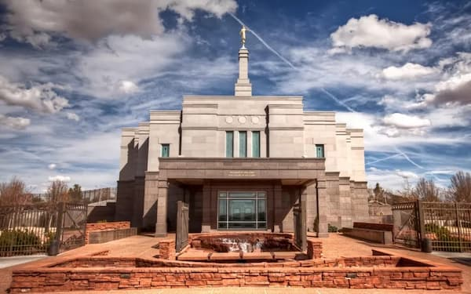

The Tucson Temple is a place of peace and power

The Mesa Arizona Temple at dusk, dedicated on October 23, 1927

An Exterior view of the Gilbert Arizona Temple, dedicated in March 2014

The Gila Valley Temple bathed in light

The spjpgof the Phoenix Arizona Temple touching the sky

Architectural details of the Snowflake Arizona Temple, a place of holiness and peace.
The Flagstaff TempleThe Queen Creek TempleThe Yuma Temple